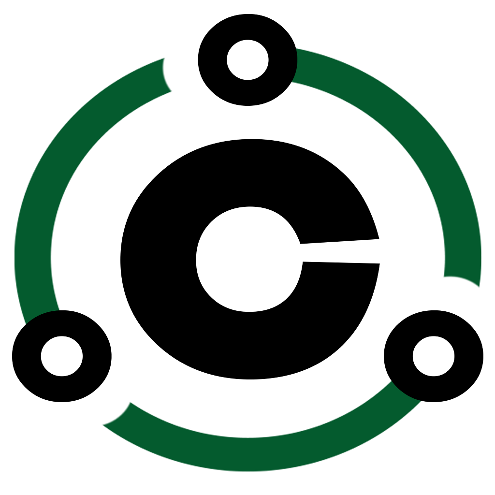

Empresas e poder público
Hotéis, pousadas, restaurantes, empresas, eventos e gestão pública.

Conexão CircularEstamos mapeando oportunidades circulares no turismo, hotelaria, alimentos & bebidas, cultura, artesanato e serviços.
Conectamos empresas, produtores, artistas, artesãos, prestadores de serviços, cooperativas e poder público para transformar recursos, resíduos e oportunidades em novos negócios, impacto mensurável e desenvolvimento territorial.

A plataforma organiza oferta e demanda territorial para reduzir desperdícios de recursos, tempo e oportunidade e criar novas relações econômicas locais.
Hotéis, pousadas, restaurantes, empresas, eventos e gestão pública.
Produtores, artistas, artesãos, prestadores, experiências, cooperativas e operadores circulares.
O desperdício não está apenas nos resíduos. Está também nas conexões que não acontecem, nos mercados que não se formam e na renda que deixa de circular.
B2B e B2G são o foco comercial desta fase. Os demais perfis ajudam a validar a oferta territorial.
Para parcerias, piloto, imprensa, negócios e informações sobre o diagnóstico.